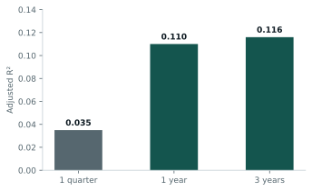
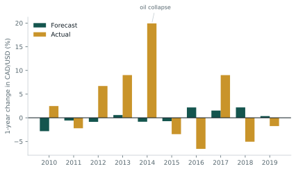

01 / 06
The question
Standard theory says exchange rates should track macro fundamentals. Purchasing Power Parity says the lower-inflation currency appreciates. The International Fisher Effect says the same thing through interest rates. Both are taught as if they work.
I tested whether they actually forecast CAD/USD, using quarterly data from 2001Q2 to 2024Q3 from FactSet. The question I cared about was not whether the regression fits, but whether the fitted model would have been any use to someone deciding whether to hedge.
02 / 06
Data and method
The dependent variable is the forward-looking change in CAD/USD, quoted as home over foreign, so a rise means the Canadian dollar weakens. Over 94 quarters it has a mean of 0.030% and a standard deviation of 4.235%, meaning a currency that went essentially nowhere while swinging about 4% a quarter.
The two economies are close to identical on the inputs. Average GDP growth 2.00% in Canada against 2.15% in the US. Average inflation 2.20% against 2.54%. Average long-term rates 2.97% against 3.14%. Every gap is under 35 basis points, which already sets a low ceiling on how much these variables can explain.
I regressed the FX change on Canadian GDP growth, US GDP growth, the inflation differential and the interest rate differential, at three horizons: one quarter, one year and three years.
The honest first observation is that theory already looked wrong on the raw data. Canada's inflation ran below the US, so PPP predicts the CAD appreciates. It depreciated by 2.9% over the sample.
03 / 06
Results

| 1 quarter | 1 year | 3 years | |
|---|---|---|---|
| Interest rate differential | −1.33 (p 0.20) | −4.29 (p 0.04) | −10.84 (p 0.004) |
| Adjusted R² | 0.035 | 0.110 | 0.116 |
| F p-value | 0.129 | 0.008 | 0.009 |
| N | 94 | 91 | 83 |
At one quarter nothing is significant, individually or jointly, and the model explains almost none of the variation. Macro fundamentals say nothing about where the currency goes next quarter.
Stretch the horizon and the interest rate differential becomes significant and its coefficient grows fourfold and then eightfold. This is consistent with PPP as a long-run theory, and with Rogoff's finding that it takes three to five years to bite. GDP growth never mattered at any horizon. Inflation carried the right sign throughout but never reached significance.
The sign on the interest rate differential also contradicts the International Fisher Effect, which predicts the high-rate currency depreciates. It appreciated instead, which is the forward premium puzzle and the reason carry trades exist.
Even at its best, the three-year model leaves about 88% of the variation unexplained.
04 / 06
The backtest, which is the real result
An adjusted R² of 0.11 looks respectable enough to act on, so I tested whether it survives out of sample. I took the one-year model and generated a forecast for each Q4 from 2010 to 2019, then compared it to what happened.

| Mean absolute error | 7.20% |
|---|---|
| RMSE | 8.87% |
| Directional accuracy | 40% |
| Correlation with actual | −0.30 |
The model called direction correctly four times out of ten. A coin does better. And the correlation between forecast and actual is negative, so the model is not merely uninformative, it is wrong in a consistent direction.
The clearest failure is 2014. The model predicted the CAD would strengthen by 0.84%. It weakened by 19.93%, because oil collapsed and Canada is one of the largest oil exporters in the world. No combination of GDP, inflation and interest rate differentials contains that information.
05 / 06
What I concluded
The in-sample fit was masking the model's actual predictive power, which is worse than nothing. Any hedging decision taken on these estimates would have destroyed value rather than protected it.
Two things went wrong. The model is overfitted, which the adjusted R² does not reveal and only the backtest does. And it is missing the variables that actually move CAD/USD: commodity prices, risk sentiment and political shocks like the 2025 tariff announcements.
The conclusion I wrote is that macro forecasts belong as one input alongside others, never as a standalone tool. That is a less satisfying answer than a working model, but it is the one the data supports.
06 / 06
What I would do differently
The obvious fix is adding oil to the specification. WTI or a commodity index would test directly whether the 2014 failure is a missing-variable problem or something worse.
I would also fit the model on a rolling window rather than the full sample. Canada's relationship to oil, and to US policy, is not stable across 23 years, and a single set of coefficients assumes it is.